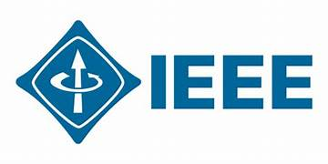

Projects
Projects & Case Work
This page highlights selected professional and technical work that reflects my experience in quality assurance, automation, testing strategy, and cross-functional delivery. These projects demonstrate both technical depth and business awareness.
Research Project
Smart Sprint Performance Agent
Novel Sprinter Assistive Smart Agent for Continuous Performance Improvement
This research project was conducted as part of my final year undergraduate studies at Sri Lanka Institute of Information Technology (SLIIT). The project focused on designing an intelligent assistive system that analyzes sprint performance using multiple sensor-based devices and provides automated feedback to improve athlete performance.
Key Components
- Smart shoe sensors for stride detection
- Track sensors for acceleration monitoring
- Arm motion detection bracelet
- Web application for performance visualization
Research IoT Sensors Performance Analytics Automation
Publication

Featured Project
FLKitover - Online Document Signing Platform
A web-based document workflow platform for Australian small businesses and real estate teams to create, send, and sign documents digitally.
In this project, I supported end-to-end quality assurance across core workflow features including document creation, signing, validation, and real-time syncing. I contributed through both manual and automated testing while working closely with the client and internal Agile team.
Manual Testing Automation Testing Agile Delivery Client Collaboration Workflow Validation Real Time Sync Testing
Key Contributions
- Owned QA for critical document workflow features.
- Designed and executed test cases for document generation and signing journeys.
- Participated in stand-ups, sprint reviews, and direct client discussions.
- Improved test coverage and supported delivery confidence.
- Received positive recognition for professionalism and responsiveness.
StaySure Travel Insurance Platform
A travel insurance platform supporting quote, policy, and claims workflows for expatriate and travel insurance customers.
This project involved end-to-end testing of insurance journeys with strong attention to compliance, coverage logic, policy document accuracy, and user experience across browsers and devices. I worked across manual and automation testing to improve release quality and reduce production risk.
Insurance Domain Web Testing API Testing Compliance Validation Cross Browser Testing UAT Support
Key Contributions
- Tested quote-to-policy and claims-related user journeys.
- Validated age limits, trip duration rules, and medical screening flows.
- Verified policy documents and product information outputs.
- Worked with Agile teams to clarify acceptance criteria and resolve defects early.
- Supported stronger release quality through risk-based planning and regression coverage.
Automation Framework Improvement at Eyepax
Scalable automation implementation for SaaS products using Cypress, Playwright, Jenkins, and API validation tools.
I contributed to building and integrating automation frameworks that improved test efficiency and release stability across multiple products and teams.
Highlights
- Reduced regression time by 50%.
- Improved test coverage for SaaS platforms by 30%.
- Supported QA sign-off for 12+ major releases.
- Helped reduce escaped defects through better dashboards and visibility.
API and Web QA Strategy at Intervest
Test design and automation support for SaaS platforms with strong API and release validation focus.
At Intervest, I worked across manual and automated testing to improve release velocity, product reliability, and team quality practices.
Highlights
- Led testing across web and API layers.
- Improved release speed by reducing manual effort.
- Contributed to CI/CD-friendly testing practices.
- Mentored junior QA engineers and promoted quality culture.
Stock Market & Real-Time Finance QA
Quality assurance for real-time stock trading systems with live data feeds and high-accuracy validation requirements.
This work required careful validation of dashboards, APIs, market data behavior, and release quality in a high-risk financial environment.
Highlights
- Tested real-time trading platforms and data-heavy workflows.
- Designed risk-based test cases for critical financial systems.
- Supported UAT and worked with international stakeholders.
- Tracked and prioritized defects based on business impact.
IoT Product Testing at OutSmart Hub
Functional and usability testing for IoT-based home automation solutions.
My early QA work included validation of mobile and web experiences connected to IoT devices, with focus on stable synchronization and realistic user scenarios.
Highlights
- Tested mobile and web integration behavior.
- Validated real-time device feedback and synchronization.
- Improved coverage accuracy through scenario-based testing.
- Documented issues that supported faster pilot releases.